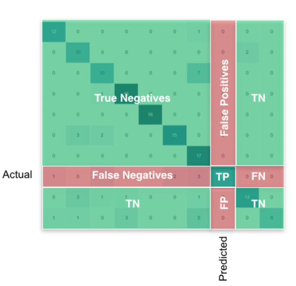

7.5 torchmetrics 模型评估指标库
模型训练时是通过loss进行好坏的评估，因为我们采用的是loss进行方向传播。对于人类评判好坏，往往不是通过loss值，而是采用某种评判指标。
在图像分类任务中常用的有Accuracy（准确率）、Recall（召回率）和Precision（精确度），图像分割中常用mIoU和Dice系数，目标检测中常用mAP，由此可见不同任务的评价指标大多不一样。
常用的指标多达几十种，本节将介绍torchmetrics工具，它目前提供超过80种评价指标的函数，并且使用起来非常方便，值得学习。
TorchMetrics简介与安装
TorchMetrics is a collection of 80+ PyTorch metrics implementations and an easy-to-use API to create custom metrics. It offers:
- A standardized interface to increase reproducibility
- Reduces Boilerplate
- Distributed-training compatible
- Rigorously tested
- Automatic accumulation over batches
- Automatic synchronization between multiple devices
安装：
pip install torchmetrics
conda install -c conda-forge torchmetrics
TorchMetrics 快速上手
torchmetrics 的使用与本章第四节课中介绍的AverageMeter类似，它能够记录每一次的信息，并通过.compute()函数进行汇总计算。
下面通过一个accuracy的例子，剖析torchmetrics的体系结构。
from my_utils import setup_seed
setup_seed(40)
import torch
import torchmetrics
metric = torchmetrics.Accuracy()
n_batches = 3
for i in range(n_batches):
preds = torch.randn(10, 5).softmax(dim=-1)
target = torch.randint(5, (10,))
acc = metric(preds, target) # 单次计算，并记录本次信息。通过维护tp, tn, fp, fn来记录所有数据
print(f"Accuracy on batch {i}: {acc}")
acc_avg = metric.compute()
print(f"Accuracy on all data: {acc_avg}")
tp, tn, fp, fn = metric.tp, metric.tn, metric.fp, metric.fn
print(tp, tn, fp, fn, sum([tp, tn, fp, fn]))
metric.reset()
Accuracy on batch 0: 0.30000001192092896
Accuracy on batch 1: 0.10000000149011612
Accuracy on batch 2: 0.20000000298023224
Accuracy on all data: 0.20000000298023224
tensor(6) tensor(96) tensor(24) tensor(24) tensor(150)
torchmetrics的使用可以分以下三步：
1.创建指标评价器
2.迭代中进行"update"或forward，update和forward均可记录每次数据信息
3.计算所有数据指标
TorchMetrics代码结构
这里提到forward，正是第四章中nn.Module的forward。 TorchMetrics所有指标均继承了nn.Module，因此可以看到这样的用法。
acc = metric(preds, target)
下面进入 torchmetrics\classification\accuracy.py 中观察 Accuracy到底是什么。
可以看到Accuracy类只有3个函数，分别是__init__, update, compute，其作用就如上文所述。
再看继承关系，Accuracy --> StatScores --> Metric --> nn.Module + ABC。
Metric类正如文档所说“The base Metric class is an abstract base class that are used as the building block for all other Module metrics.”，是torchmetrics所有类的基类，它实现forward函数，因此才有像这样的调用： acc = metric(preds, target)
Accuracy 更新逻辑
torchmetrics的使用与上一节课中的AverageMeter+Accuracy函数类似，不过在数据更新维护方面略有不同，并且torchmetrics还有点难理解。
AverageMeter+Accuracy时，是通过self.val, self.sum, self.count, self.avg进行维护。
在torchmetrics.Accuracy中，并没有这些属性，而是通过tp, tn, fp, fn进行维护。
但是有个问题来了，请仔细观察代码，iteration循环是3次，每一次batch的数量是10，按道理tp+tn+fp+fn= 30，总共30个样本，为什么会是150？
因为，这是多类别分类的统计，不是二分类。因此需要为每一个类，单独计算tp, tn, fp, fn。又因为有5个类别，因此是30*5=150。
关于多类别的tp, tn, fp, fn，可参考stackoverflow

还有个好例子，请看混淆矩阵：
真实\预测 0 1 2
0 2 0 0
1 1 0 1
2 0 2 0
对于类别0的 FP=1 TP=2 FN=0 TN=3
对于类别1的 FP=2 TP=0 FN=2 TN=2
对于类别2的 FP=1 TP=0 FN=2 TN=3
自定义metrics
了解了Accuracy使用逻辑，就可以触类旁通，使用其它80多个Metrics。
但总有不满足业务需求的时候，这时候就需要自定义metrics。
自定义metrics非常简单，它就像自定义Module一样，提供必备的函数即可。
自定义metrics只需要继承Metric，然后实现以下三个函数即可：
- init(): Each state variable should be called using self.add_state(...).
- update(): Any code needed to update the state given any inputs to the metric.
- compute(): Computes a final value from the state of the metric.
举例：
class MyAccuracy(Metric):
full_state_update: bool = False
def __init__(self):
super().__init__()
self.add_state("correct", default=torch.tensor(0), dist_reduce_fx="sum")
self.add_state("total", default=torch.tensor(0), dist_reduce_fx="sum")
def update(self, preds: torch.Tensor, target: torch.Tensor):
batch_size = target.size(0)
_, pred = preds.topk(1, 1, True, True)
pred = pred.t()
correct = pred.eq(target.reshape(1, -1).expand_as(pred))
self.correct += torch.sum(correct)
self.total += batch_size
def compute(self):
return self.correct.float() / self.total
这里需要注意的是：
- 在init函数中需要通过add_state进行属性初始化；
- 在update中需要处理接收的数据，并可自定义管理机制，如这里采用correct与total来管理总的数据
- 在compute中需清晰知道返回的是总数据的Accuracy
小结
torchmetrics是一个简单易用的指标评估库，里面提供了80多种指标，建议采用torchmetrics进行指标评估，避免重复造轮子。
下面请看支持的指标：
Auido 任务指标
- Perceptual Evaluation of Speech Quality (PESQ)
- Permutation Invariant Training (PIT)
- Scale-Invariant Signal-to-Distortion Ratio (SI-SDR)
- Scale-Invariant Signal-to-Noise Ratio (SI-SNR)
- Short-Time Objective Intelligibility (STOI)
- Signal to Distortion Ratio (SDR)
- Signal-to-Noise Ratio (SNR)
分类 任务指标
- Accuracy
- AUC
- AUROC
- Average Precision
- Binned Average Precision
- Binned Precision Recall Curve
- Binned Recall At Fixed Precision
- Calibration Error
- Cohen Kappa
- Confusion Matrix
- Coverage Error
- Dice Score
- F1 Score
- FBeta Score
- Hamming Distance
- Hinge Loss
- Jaccard Index
- KL Divergence
- Label Ranking Average Precision
- Label Ranking Loss
- Matthews Corr. Coef.
- Precision
- Precision Recall
- Precision Recall Curve
- Recall
- ROC
- Specificity
- Stat Scores
图像 任务指标
- Error Relative Global Dim. Synthesis (ERGAS)
- Frechet Inception Distance (FID)
- Image Gradients
- Inception Score
- Kernel Inception Distance
- Learned Perceptual Image Patch Similarity (LPIPS)
- Multi-Scale SSIM
- Peak Signal-to-Noise Ratio (PSNR)
- Spectral Angle Mapper
- Spectral Distortion Index
- Structural Similarity Index Measure (SSIM)
- Universal Image Quality Index
检测 任务指标
- Mean-Average-Precision (mAP)
Pairwise 任务指标
- Cosine Similarity
- Euclidean Distance
- Linear Similarity
- Manhattan Distance
Regression 任务指标
- Cosine Similarity
- Explained Variance
- Mean Absolute Error (MAE)
- Mean Absolute Percentage Error (MAPE)
- Mean Squared Error (MSE)
- Mean Squared Log Error (MSLE)
- Pearson Corr. Coef.
- R2 Score
- Spearman Corr. Coef.
- Symmetric Mean Absolute Percentage Error (SMAPE)
- Tweedie Deviance Score
- Weighted MAPE
Retrieval 任务指标
- Retrieval Fall-Out
- Retrieval Hit Rate
- Retrieval Mean Average Precision (MAP)
- Retrieval Mean Reciprocal Rank (MRR)
- Retrieval Normalized DCG
- Retrieval Precision
- Retrieval R-Precision
- Retrieval Recall
Text 任务指标
- BERT Score
- BLEU Score
- Char Error Rate
- ChrF Score
- Extended Edit Distance
- Match Error Rate
- ROUGE Score
- Sacre BLEU Score
- SQuAD
- Translation Edit Rate (TER)
- Word Error Rate
- Word Info. LostWord Info. Preserved